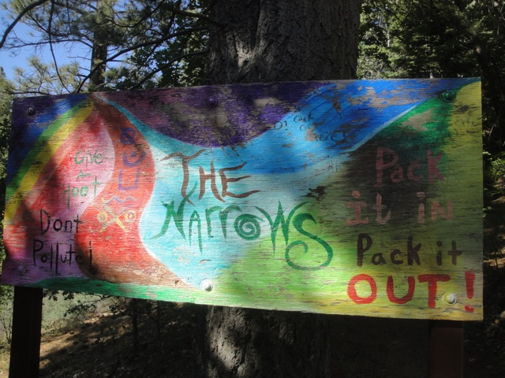
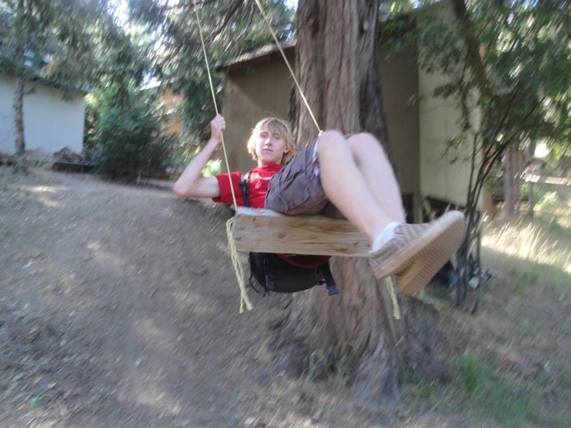
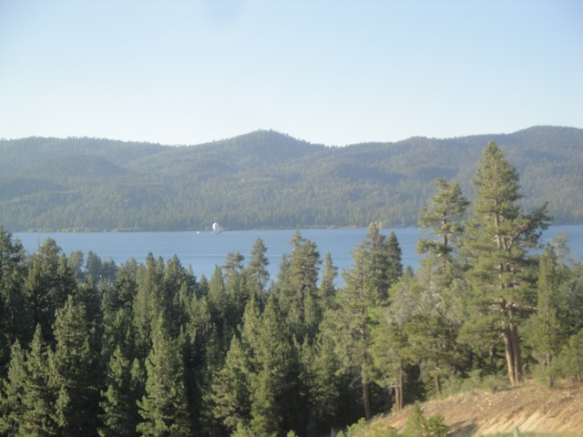
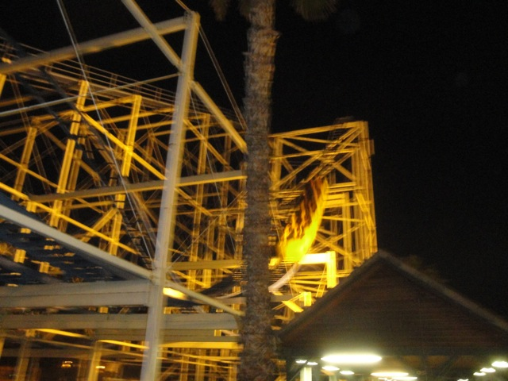

Big Bear 2012
All right. After my amazing Europe Trip, I didn't want all the fun to end. Now naturally, its physically impossible for me to top that until I go on my next insane trip. But hey. That doesn't mean the funs over. We still managed to have one freaking fantastic day.
First stop of the day was at the Narrows, near Big Bear, where we went Cliff Jumping since Tar Creek is already dried up.
"Is that the signal I see in the sky!!? No time to waste!!! DYLAN AWAY!!!!!!"
After seeing the length of the hike, I figured the hike down to the Narrows would be easy since its less than a mile. WRONG!!!!! No hike where every step you take causes a massive landslide can be considered easy.
We made it!!! We're here at the Narrows!!!
Oh, one very interesting thing happened while we were at the Narrows. We met up with the folks from Los Angeles Swimmin, the biggest cliff jumping group in Southern California, and a bunch of badasses. And hell, they were shooting some cliff jumping documentary that we're all going to star in now. =)
All right!!! Lets get jumping over here!!!!
Umm, yeah. The people from L.A Swimmin are f*cking insane. And I just love that. I really need to go cliff jumping with them more often.
"Yeah, they don't have any small jumps here, so we're all just starting out on the 60 ftr. Probably not smart of me since I keep ass-swooping today, but whatever. WEE!!!!!!"
"Dude!!! I haven't jumped off anything in over a month!!! This feels so great!!!!"
(Photo by Cody Kempema)
Hey everyone!!! Triple Jump!!!!

Well, I had a blast at the Narrows. And after Dylan jumped the 85 ftr when we all weren't looking, we have to go back and jump it now. Oh, and please obey the sign so I don't have to come and kick your ass.

Hey look what I found over here!!! =)
I never had lunch, I'm starving, and I was told to go here, driving for several miles passing by several resteraunts that look really good. This place better be damn special.
Dude. This food kicks ass.
Holy Crap!!! We so have to do this!!!!
 Funny story about this Alpine Slide. I had no idea that this thing even existed until about 7 months ago. Then when I found out we had an Alpine Slide in Southern California. I wanted to do it immedietly. But plans to do it that Winter never worked out, so I forgot all about it until a couple days before this day when I was told we would be cliff jumping near Big Bear. Suddenly, I remembered about this and made us do it.
Funny story about this Alpine Slide. I had no idea that this thing even existed until about 7 months ago. Then when I found out we had an Alpine Slide in Southern California. I wanted to do it immedietly. But plans to do it that Winter never worked out, so I forgot all about it until a couple days before this day when I was told we would be cliff jumping near Big Bear. Suddenly, I remembered about this and made us do it.
Ooh. Heading up the Ski Lift!!!! =)

Love the view of Big Bear from the Skilift.
I like the looks of these bumps.
Nice. I just tried my first Alpine Coaster a couple weeks ago. Now lets see how an Alpine Slide is.
It was fun and all, but not nearly as crazy as the Alpine Coaster @ Fort Fun.
Hey, if you want a better look at the Alpine Slide, check out my POV of the Alpine Slide. (Warning, the POV is not complete, but all thats missing is the final turn into the brake run).
 HELL NO!!!!!!!!
HELL NO!!!!!!!!
Yay!!! We got Jen on the Alpine Slide!!!!
After all that fun, we thought why not throw some coasters into the mix since we are coaster enthusiasts. So its off to Scandia we go!!!

Yeah. We're here to ride this little beauty.
 Don't be fooled by its looks. It really is one of the most underrated coasters out there.
Don't be fooled by its looks. It really is one of the most underrated coasters out there.
"I did it!!! I rode the Scandia Screamer and I liked it!!!!"
Since last time, they filled in the empty space with a Screamin Swing. I was told in advance that it ran a sh*tty program. But it seemed pretty strong to me. I liked it.
Hey. This is a good drop tower and all, but its ironic that we're cliff jumpers riding Cliff Jumper. Plus, we did a cliff jump about half the size of this drop tower today. =)
Who spilled paint on the Carousel?
MUSH I SAY!!!! MUSH!!!!!
We decided to ride the Bumper Boats at night. Stupid Idea. I kept getting sprayed and then got pushed under the waterfall.
"I really hate this... Who am I kidding. This ride is awesome."
Sorry kids. You're gonna have to deal with wet seats. Suck it up and deal with it. Lifes a bitch. =)
DUDE!!! TONIGHT WE FOUND THE MOST INSANE GRAVITRON EVER!!! There are no rules in here and you can do whatever you want. We were riding sideways, upsidedown, these cool kids were running around, and they were playing Smash Mouth music videos inside. It was so insane we did it twice in a row.
"I'M DRUNK OFF A COCKTAIL OF HAPPINESS, INSANITY, AND SMASH MOUTH!!!!"
One more ride on the Scandia Screamer to conclude this awesome awesome night.
Home